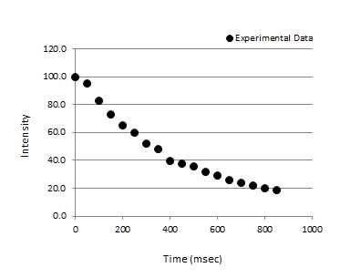
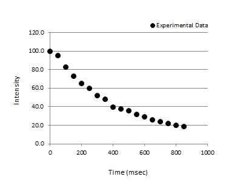

Arguably one of the most important tools for any STEM graduate is a general-purpose utility for fitting experimental data.
Many programs exist (both commercial and free) that allow for non-linear fitting of data including: GraphPad Prism, Matlab, Maple, Wolfram Alpha, gnuplot, GNU Octave, and many, many more...
However, lets say that there is no budget for purchasing a pricey license for any of the commercial options and you don't need anything fancy above simply fitting your own equations to data. In that case why don't we build our own tool from one of the most ubiquitous pieces of software around - Microsoft Excel!
Note: If you don't have a license for Excel or are using Linux, you can download the open-source OpenOffice software instead.
Many experiments performed in the lab will measure some change (or response) in a variable y (such as intensity) relative to some variable x (such as time).
Lets work with the following data, where x is in units of time (msec), and y is the measured intensity of some response (arbitrary units)
If we plot the data above, we get the following:

Looking at this data, we might recognize that it follows the general trend of exponential decay.
Model 1: General Exponential Decay
The equation for a general exponential decay function is: f(x)=a*exp(-x/b) where a is the starting intensity and b is the time constant (average lifetime)
Building the Excel Tool for Model 1:
Below is a snapshot of the Excel tool.
On the left is the table of x and y values from the table above (raw experimental data)
In center is the plot of the experimental data and the fitted model (Model 1)
On the right is the equation for Model 1 (General Exponential Decay) along with the starting parameters a and b.
To start out with, we have to make initial guesses for values of a and b.
Since we know a is the starting intensity, we can look at the first value of y in the table on the left and the y-value at x=0 is 100. Therefore, a good starting guess for a is 100 (a = 100).
We don't know the value of b, but thats ok since we will let the tool figure this out for us. We do still need to guess a starting value of b though and a good guess is to pick any value of x close to the half-maximum intensity (say 400 msec). So our guess is b = 400.
The column "Model f(x)" is filled in by using the formula for f(x), where f(x)=a*exp(-x/b). The formula needs to reference the cells for values a and b, respectively.
When we input the values of a and b in their respective places in the tool, the plot auto-updates and we get the following:
We can see that the curve that describes the fitted model (blue curve) looks like it is starting to model the experimental data reasonably well but its not yet perfect.
We want the blue curve to pass through each of the black data points.
To do this, we will use a least-squares minimum approach, where we subtract the value of the experimental intensity (y) from the fitted model f(x) at each value of x.
For example, our starting model says that the value of the intensity f(x) at x=0 is 100. The corresponding value of y at x=0 is also 100. So f(x)-y = 100-100 = 0.
We do this for each subsequent value of x.
So for x=50, f(x) = 88.2 and y = 95. Therefore, f(x)-y = 88.2 - 95 = -6.8. The value of -6.8 is the residual.
See how the values of f(x)-y are filled in on the table on the right of the plot?
We now take the SUM of the residuals and square the SUM. This gives us the Squared Sum of the Residuals. Using Excel, the command is =SUMSQ( )
Below, we show the value of the sumSQ cell. Note how we input the entire range of cells for all of the residuals listed in the f(x)-y column.
Finally, to fit the model to the data we will try to vary the values of a and b such that the sumSQ is a minumum (minimize the difference between the values of the model and the experimental data at each time point).
We do this by using the "Solver" tool in Excel.
This is a built-in tool that can be found under the "Data" tab.
If the "Solver" button cannot be found in your version of Excel, you will need to go into the Options menu in Excel (File --> Options --> Add-ins) and Load the "Solver Add-In".
This should activate this tool.
Now click the "Solver" button. This will open a window like the one shown below.

You need to Set the Objective as the "SumSQ" by selecting the cell containing the value of SumSQ.
We select the "min" radio button since we want to minimize the SumSQ value.
We are minimizing SumSQ by changing the variables a and b (fitted parameters).
Now click the "Solve" button.
If everything worked correctly, you should see the following pop-up:
Select "Keep Solver Solution" and click "OK"
Doing so will update the plot and the values of a and b in the table.
We can see that the blue curve describing our fitted model is in much better agreement with the experimental data points once we have completed the minimization of sumSQ (minimized the residuals). The values of a and b should now represent very good approximations to the true values which best explain the experimental data.

Using this approach, you can fit models to many types of experimental data!
Many programs exist (both commercial and free) that allow for non-linear fitting of data including: GraphPad Prism, Matlab, Maple, Wolfram Alpha, gnuplot, GNU Octave, and many, many more...
However, lets say that there is no budget for purchasing a pricey license for any of the commercial options and you don't need anything fancy above simply fitting your own equations to data. In that case why don't we build our own tool from one of the most ubiquitous pieces of software around - Microsoft Excel!
Note: If you don't have a license for Excel or are using Linux, you can download the open-source OpenOffice software instead.
Many experiments performed in the lab will measure some change (or response) in a variable y (such as intensity) relative to some variable x (such as time).
Lets work with the following data, where x is in units of time (msec), and y is the measured intensity of some response (arbitrary units)
| x (time) |
y (intensity) |
| 0 | 100.0 |
| 50 | 95.0 |
| 100 | 83.0 |
| 150 | 73.0 |
| 200 | 65.0 |
| 250 | 60.0 |
| 300 | 52.0 |
| 350 | 48.0 |
| 400 | 40.0 |
| 450 | 38.0 |
| 500 | 36.0 |
| 550 | 32.0 |
| 600 | 29.0 |
| 650 | 26.0 |
| 700 | 24.0 |
| 750 | 22.0 |
| 800 | 20.0 |
| 850 | 19.0 |
If we plot the data above, we get the following:

Looking at this data, we might recognize that it follows the general trend of exponential decay.
Model 1: General Exponential Decay
The equation for a general exponential decay function is: f(x)=a*exp(-x/b) where a is the starting intensity and b is the time constant (average lifetime)
Building the Excel Tool for Model 1:
Below is a snapshot of the Excel tool.
On the left is the table of x and y values from the table above (raw experimental data)
In center is the plot of the experimental data and the fitted model (Model 1)
On the right is the equation for Model 1 (General Exponential Decay) along with the starting parameters a and b.
To start out with, we have to make initial guesses for values of a and b.
Since we know a is the starting intensity, we can look at the first value of y in the table on the left and the y-value at x=0 is 100. Therefore, a good starting guess for a is 100 (a = 100).
We don't know the value of b, but thats ok since we will let the tool figure this out for us. We do still need to guess a starting value of b though and a good guess is to pick any value of x close to the half-maximum intensity (say 400 msec). So our guess is b = 400.
The column "Model f(x)" is filled in by using the formula for f(x), where f(x)=a*exp(-x/b). The formula needs to reference the cells for values a and b, respectively.
When we input the values of a and b in their respective places in the tool, the plot auto-updates and we get the following:
We can see that the curve that describes the fitted model (blue curve) looks like it is starting to model the experimental data reasonably well but its not yet perfect.
We want the blue curve to pass through each of the black data points.
To do this, we will use a least-squares minimum approach, where we subtract the value of the experimental intensity (y) from the fitted model f(x) at each value of x.
For example, our starting model says that the value of the intensity f(x) at x=0 is 100. The corresponding value of y at x=0 is also 100. So f(x)-y = 100-100 = 0.
We do this for each subsequent value of x.
So for x=50, f(x) = 88.2 and y = 95. Therefore, f(x)-y = 88.2 - 95 = -6.8. The value of -6.8 is the residual.
See how the values of f(x)-y are filled in on the table on the right of the plot?
We now take the SUM of the residuals and square the SUM. This gives us the Squared Sum of the Residuals. Using Excel, the command is =SUMSQ( )
Below, we show the value of the sumSQ cell. Note how we input the entire range of cells for all of the residuals listed in the f(x)-y column.
Finally, to fit the model to the data we will try to vary the values of a and b such that the sumSQ is a minumum (minimize the difference between the values of the model and the experimental data at each time point).
We do this by using the "Solver" tool in Excel.
This is a built-in tool that can be found under the "Data" tab.
If the "Solver" button cannot be found in your version of Excel, you will need to go into the Options menu in Excel (File --> Options --> Add-ins) and Load the "Solver Add-In".
This should activate this tool.
Now click the "Solver" button. This will open a window like the one shown below.
You need to Set the Objective as the "SumSQ" by selecting the cell containing the value of SumSQ.
We select the "min" radio button since we want to minimize the SumSQ value.
We are minimizing SumSQ by changing the variables a and b (fitted parameters).
Now click the "Solve" button.
If everything worked correctly, you should see the following pop-up:
Select "Keep Solver Solution" and click "OK"
Doing so will update the plot and the values of a and b in the table.
We can see that the blue curve describing our fitted model is in much better agreement with the experimental data points once we have completed the minimization of sumSQ (minimized the residuals). The values of a and b should now represent very good approximations to the true values which best explain the experimental data.
Using this approach, you can fit models to many types of experimental data!